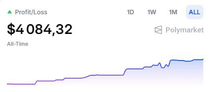

I tested and trained Obly for over 2 weeks on winning and losing strategies on Polymarket & crypto trading.
The above screenshot is showcasing just 3 days of Obly in action.
I do nothing. He is tested to be profitable.
15-minute BTC predictions is all he trades.
I can now make him free to use due to creator fees. For everyone.
Start Using Obly →